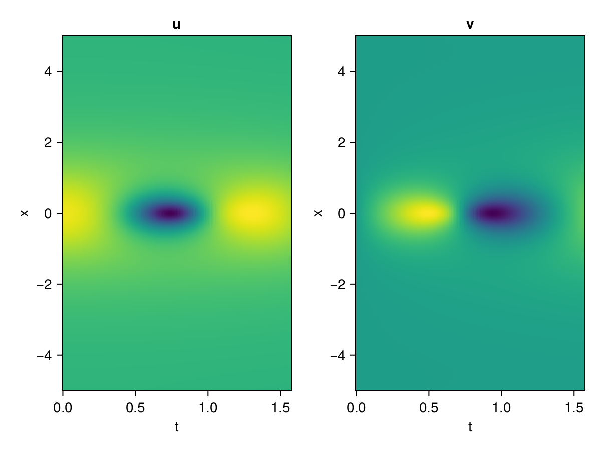
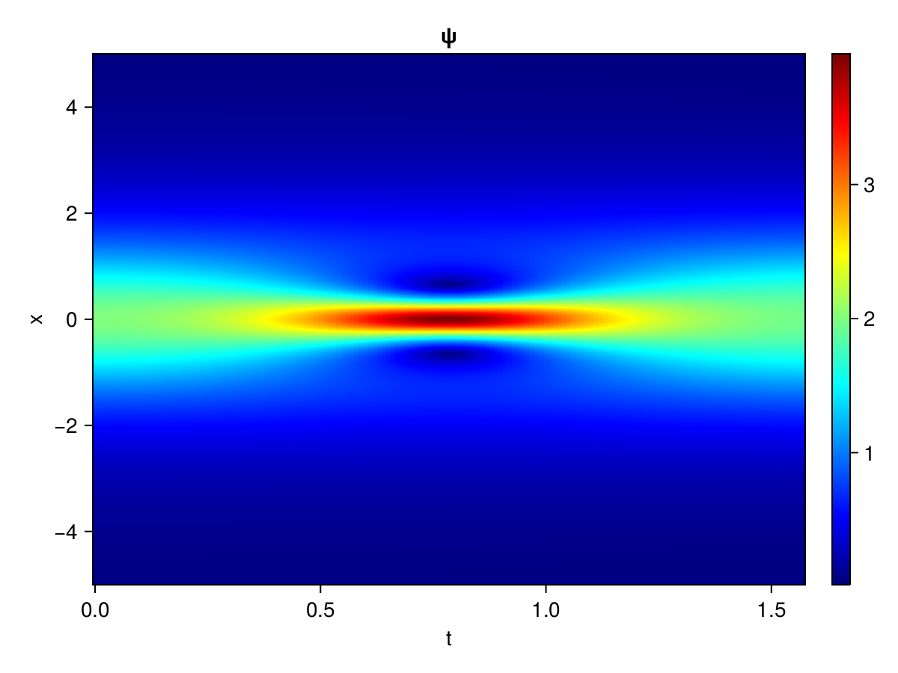
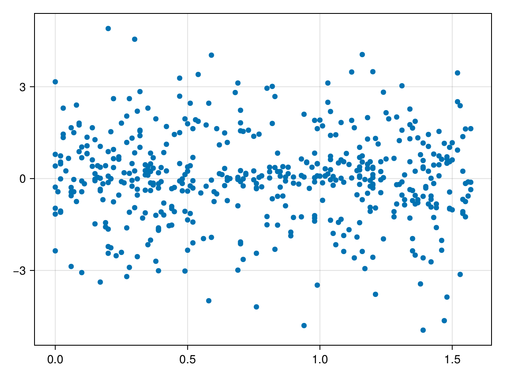

Schrödinger equation
The nonlinear Shrödinger equation is given by
\[\mathrm{i} \partial_t \psi=-\frac{1}{2} \sigma \partial_{x x} \psi-\beta|\psi|^2 \psi\]
Let $\sigma=\beta=1, \psi=u+v i$, the equation can be transformed into a system of partial differential equations
using ModelingToolkit, IntervalSets, Sophon, CairoMakie
using Optimization, OptimizationOptimJL, Zygote
@parameters x,t
@variables u(..), v(..)
Dₜ = Differential(t)
Dₓ² = Differential(x)^2
eqs=[Dₜ(u(x,t)) ~ -Dₓ²(v(x,t))/2 - (abs2(v(x,t)) + abs2(u(x,t))) * v(x,t),
Dₜ(v(x,t)) ~ Dₓ²(u(x,t))/2 + (abs2(v(x,t)) + abs2(u(x,t))) * u(x,t)]
bcs = [u(x, 0.0) ~ 2sech(x),
v(x, 0.0) ~ 0.0,
u(-5.0, t) ~ u(5.0, t),
v(-5.0, t) ~ v(5.0, t)]
domains = [x ∈ Interval(-5.0, 5.0),
t ∈ Interval(0.0, π/2)]
@named pde_system = PDESystem(eqs, bcs, domains, [x,t], [u(x,t),v(x,t)])\[ \begin{align} \frac{\mathrm{d}}{\mathrm{d}t} u\left( x, t \right) =& - \frac{1}{2} \frac{\mathrm{d}}{\mathrm{d}x} \frac{\mathrm{d}}{\mathrm{d}x} v\left( x, t \right) - v\left( x, t \right) \left( \left|u\left( x, t \right)\right|^{2} + \left|v\left( x, t \right)\right|^{2} \right) \\ \frac{\mathrm{d}}{\mathrm{d}t} v\left( x, t \right) =& \frac{1}{2} \frac{\mathrm{d}}{\mathrm{d}x} \frac{\mathrm{d}}{\mathrm{d}x} u\left( x, t \right) + u\left( x, t \right) \left( \left|u\left( x, t \right)\right|^{2} + \left|v\left( x, t \right)\right|^{2} \right) \end{align} \]
pinn = PINN(u = Siren(2,1; hidden_dims=16,num_layers=4, omega = 1.0),
v = Siren(2,1; hidden_dims=16,num_layers=4, omega = 1.0))
sampler = QuasiRandomSampler(500, (200,200,20,20))
strategy = NonAdaptiveTraining(1,(10,10,1,1))
prob = Sophon.discretize(pde_system, pinn, sampler, strategy)OptimizationProblem. In-place: true
u0: ComponentVector{Float64}(u = (layer_1 = (weight = [0.08586817979812622 0.3323690891265869; 0.06503117084503174 -0.40881508588790894; … ; -0.23807072639465332 -0.1593826413154602; -0.24817752838134766 -0.14786165952682495], bias = [0.0; 0.0; … ; 0.0; 0.0;;]), layer_2 = (weight = [-0.4777279198169708 0.18026679754257202 … 0.16635750234127045 0.5271674990653992; 0.5101140141487122 -0.573943555355072 … -0.37173178791999817 -0.4812098741531372; … ; 0.19049394130706787 0.18492276966571808 … -0.33214861154556274 -0.4736572504043579; -0.4128112196922302 -0.5903148055076599 … -0.3261650502681732 -0.45106732845306396], bias = [0.0; 0.0; … ; 0.0; 0.0;;]), layer_3 = (weight = [-0.18974335491657257 -0.5450815558433533 … -0.3839823603630066 0.21482092142105103; 0.34658101201057434 -0.11563757807016373 … 0.08082956075668335 -0.2713918387889862; … ; -0.07264088094234467 0.5626541376113892 … -0.5723510980606079 -0.12063993513584137; 0.02561272867023945 -0.17855355143547058 … -0.25706520676612854 -0.06471069157123566], bias = [0.0; 0.0; … ; 0.0; 0.0;;]), layer_4 = (weight = [-0.4753018021583557 0.06441905349493027 … -0.4881612956523895 -0.36858969926834106; 0.24324263632297516 0.0010301826987415552 … -0.45358994603157043 0.48962223529815674; … ; 0.3128330409526825 0.6029567122459412 … -0.4996485710144043 -0.24557602405548096; -0.2966800630092621 -0.21581591665744781 … -0.04635070636868477 -0.45269837975502014], bias = [0.0; 0.0; … ; 0.0; 0.0;;]), layer_5 = (weight = [-0.5592480301856995 0.38478580117225647 … 0.26529350876808167 0.10790544003248215], bias = [0.0;;])), v = (layer_1 = (weight = [-0.3819042444229126 -0.13655632734298706; 0.23507726192474365 -0.22877275943756104; … ; 0.45354175567626953 0.23291689157485962; 0.2704339623451233 0.24904751777648926], bias = [0.0; 0.0; … ; 0.0; 0.0;;]), layer_2 = (weight = [-0.16904297471046448 -0.028478581458330154 … 0.11488997936248779 -0.2878729999065399; 0.04321957007050514 0.42124903202056885 … 0.24865028262138367 0.079441599547863; … ; -0.34669744968414307 0.22580040991306305 … -0.30403172969818115 0.49677518010139465; 0.4812503159046173 -0.36567312479019165 … -0.354384183883667 -0.39302071928977966], bias = [0.0; 0.0; … ; 0.0; 0.0;;]), layer_3 = (weight = [-0.5572018027305603 0.4110468626022339 … -0.5385319590568542 0.06543383002281189; -0.17295989394187927 -0.017639324069023132 … 0.4142703413963318 0.008647052571177483; … ; 0.07605606317520142 -0.47153162956237793 … -0.0021261388901621103 -0.2925953269004822; -0.4474151134490967 0.26139411330223083 … 0.5071015357971191 -0.07443610578775406], bias = [0.0; 0.0; … ; 0.0; 0.0;;]), layer_4 = (weight = [0.25034090876579285 -0.011240175925195217 … 0.39700639247894287 0.2985399067401886; -0.17201833426952362 -0.4795494079589844 … -0.14692221581935883 -0.16892193257808685; … ; 0.06830056011676788 -0.4494840204715729 … -0.2184126079082489 -0.48092159628868103; -0.1082693487405777 -0.3828745186328888 … -0.5054458379745483 0.009961280040442944], bias = [0.0; 0.0; … ; 0.0; 0.0;;]), layer_5 = (weight = [0.10954269021749496 0.02886117808520794 … -0.43015056848526 0.5916587114334106], bias = [0.0;;])))Now we train the neural nets and resample data while training.
function train(pde_system, prob, sampler, strategy, resample_period = 500, n=10)
bfgs = BFGS()
res = Optimization.solve(prob, bfgs; maxiters=2000)
for i in 1:n
data = Sophon.sample(pde_system, sampler)
prob = remake(prob; u0=res.u, p=data)
@showprogress res = Optimization.solve(prob, bfgs; maxiters=resample_period)
end
return res
end
res = train(pde_system, prob, sampler, strategy)u: ComponentVector{Float64}(u = (layer_1 = (weight = [0.2917678609501527 0.1749220023882592; 0.43275019646638085 -0.5254834278319497; … ; -0.7969540463096483 -0.7637519999935327; -0.2716562191187546 -0.12769776973036956], bias = [0.02962531017850872; 0.5291098945539185; … ; 0.40499849209359495; 0.015030252081942265;;]), layer_2 = (weight = [-0.5316243575828132 0.16205838641621084 … 0.013742930452055994 0.5414751516784673; 0.42435142372061335 -0.9711055829724493 … -0.9273552990674112 -0.5561550326958106; … ; 0.09149921520241931 0.4848564508853652 … -0.0010745245797281553 -0.3466598796704486; -0.5885003759152535 -0.7750126601486113 … -0.1820072353797062 -0.33635443413815547], bias = [-0.2048300152662117; 0.09736646197648162; … ; -0.3781659184998701; -0.37290896767923204;;]), layer_3 = (weight = [-0.08415234103664657 -0.006067703386209669 … -0.3236725224419664 0.6190154868276817; 0.33126199481764446 -0.6759689113358506 … 0.07406954009511676 -0.2644741583957306; … ; 0.10858200663381044 0.41581968784828804 … -0.3458503984865133 0.2323147018722437; 0.14686338374487812 -0.3602696427223976 … -0.2721809799135446 0.12107894223931696], bias = [0.1759671905812829; 0.15977791814606027; … ; 0.10590409703488689; 0.03252010061505039;;]), layer_4 = (weight = [-0.3245293885717117 0.29397819233601374 … -0.48279426900631545 -0.331117151487156; 0.20618219801861598 0.6718119462618013 … -0.3410084368056295 0.1837748032936443; … ; -0.37124190892506304 0.27463583615512377 … -0.2828821209673331 -0.2261384610422254; -0.2636988312997608 -0.2672359751122633 … -0.05800195210774326 -0.4947640209258399], bias = [0.129463092976763; 0.476809586862229; … ; -0.26325082693023855; 0.06998739291189363;;]), layer_5 = (weight = [-1.3897982499897157 0.7395128839338233 … 0.4304108162929927 -0.17895963272991464], bias = [-0.17312467471244125;;])), v = (layer_1 = (weight = [-0.40890528833092316 0.1634195478262321; -0.05786883057524446 -1.1409931541398923; … ; 0.32332312933205426 -0.20756290175876366; 0.2339057122607865 0.06323417559165986], bias = [0.23903549691469766; 0.39243466044680037; … ; 0.3445020280280668; -0.1322284220122801;;]), layer_2 = (weight = [-0.16533956841231542 -0.4188363396849171 … 0.2746390271059242 -0.341216783017228; -0.03326412386265441 0.4235183569337222 … 0.39453889827625893 0.20659023956558292; … ; -0.48729006240672856 0.19899462453205535 … -0.40303703479027475 0.4605536529046365; 0.5716855806505936 -0.9305915620389417 … -0.3116007736145945 -0.44684904572926076], bias = [0.3702790926666741; -0.1810838433732005; … ; 0.2017755082361394; 0.39314572692895194;;]), layer_3 = (weight = [-0.28097314664016937 0.5962515974762072 … -0.3860579503358109 -0.22745409063399863; -0.043061294078890824 0.018549368644453498 … 0.06005825919689509 -0.15033850012912822; … ; 0.6041906156893856 -0.28489053705011097 … -0.07954339205876693 -0.029083285098971266; -0.17092185434269425 0.19964772896086566 … 0.6537249392481675 0.12182403003197807], bias = [0.3371863718423557; -0.4637612217820745; … ; -0.08596775206757137; 0.2896738806928538;;]), layer_4 = (weight = [0.45725785387325957 -0.030327037103795744 … 0.06198184557348238 0.09503142071615193; -0.08536339837534379 -0.4162973346482733 … -0.052399802804391965 -0.16929979694225733; … ; 0.06824500269256431 -0.40545997543270634 … 0.07408939621851283 -0.2555818414475836; -0.09927435723358273 -0.7141690847877753 … -0.7848080739501022 0.17442628250958903], bias = [0.3015134845756357; -0.09911670495774996; … ; -0.12158873344130978; -0.06381707765161981;;]), layer_5 = (weight = [0.29896205961506744 -0.18621680857510045 … -0.7022773608599024 1.4425809611316853], bias = [0.05392567133571823;;])))phi = pinn.phi
ps = res.u
xs, ts= [infimum(d.domain):0.01:supremum(d.domain) for d in pde_system.domain]
u = [sum(phi.u(([x,t]), ps.u)) for x in xs, t in ts]
v = [sum(phi.v(([x,t]), ps.v)) for x in xs, t in ts]
ψ = @. sqrt(u^2+ v^2)
axis = (xlabel="t", ylabel="x", title="u")
fig, ax1, hm1 = heatmap(ts, xs, u', axis=axis)
ax2, hm2= heatmap(fig[1, end+1], ts, xs, v', axis= merge(axis, (; title="v")))
display(fig)
axis = (xlabel="t", ylabel="x", title="ψ")
fig, ax1, hm1 = heatmap(ts, xs, ψ', axis=axis, colormap=:jet)
Colorbar(fig[:, end+1], hm1)
display(fig)
Customize Sampling
Bascially any sampling method is supportted. For example we can sample data according to the predicted solution.
using StatsBase
data = vec([[x, t] for x in xs, t in ts])
wv = vec(ψ)
new_data = wsample(data, wv, 500)
new_data = reduce(hcat, new_data)
fig, ax = scatter(new_data[2,:], new_data[1,:])
prob.p[1] = new_data
prob.p[2] = new_data
prob = remake(prob; u0 = res.u)
# res = Optimization.solve(prob, bfgs; maxiters=1000)OptimizationProblem. In-place: true
u0: ComponentVector{Float64}(u = (layer_1 = (weight = [0.2917678609501527 0.1749220023882592; 0.43275019646638085 -0.5254834278319497; … ; -0.7969540463096483 -0.7637519999935327; -0.2716562191187546 -0.12769776973036956], bias = [0.02962531017850872; 0.5291098945539185; … ; 0.40499849209359495; 0.015030252081942265;;]), layer_2 = (weight = [-0.5316243575828132 0.16205838641621084 … 0.013742930452055994 0.5414751516784673; 0.42435142372061335 -0.9711055829724493 … -0.9273552990674112 -0.5561550326958106; … ; 0.09149921520241931 0.4848564508853652 … -0.0010745245797281553 -0.3466598796704486; -0.5885003759152535 -0.7750126601486113 … -0.1820072353797062 -0.33635443413815547], bias = [-0.2048300152662117; 0.09736646197648162; … ; -0.3781659184998701; -0.37290896767923204;;]), layer_3 = (weight = [-0.08415234103664657 -0.006067703386209669 … -0.3236725224419664 0.6190154868276817; 0.33126199481764446 -0.6759689113358506 … 0.07406954009511676 -0.2644741583957306; … ; 0.10858200663381044 0.41581968784828804 … -0.3458503984865133 0.2323147018722437; 0.14686338374487812 -0.3602696427223976 … -0.2721809799135446 0.12107894223931696], bias = [0.1759671905812829; 0.15977791814606027; … ; 0.10590409703488689; 0.03252010061505039;;]), layer_4 = (weight = [-0.3245293885717117 0.29397819233601374 … -0.48279426900631545 -0.331117151487156; 0.20618219801861598 0.6718119462618013 … -0.3410084368056295 0.1837748032936443; … ; -0.37124190892506304 0.27463583615512377 … -0.2828821209673331 -0.2261384610422254; -0.2636988312997608 -0.2672359751122633 … -0.05800195210774326 -0.4947640209258399], bias = [0.129463092976763; 0.476809586862229; … ; -0.26325082693023855; 0.06998739291189363;;]), layer_5 = (weight = [-1.3897982499897157 0.7395128839338233 … 0.4304108162929927 -0.17895963272991464], bias = [-0.17312467471244125;;])), v = (layer_1 = (weight = [-0.40890528833092316 0.1634195478262321; -0.05786883057524446 -1.1409931541398923; … ; 0.32332312933205426 -0.20756290175876366; 0.2339057122607865 0.06323417559165986], bias = [0.23903549691469766; 0.39243466044680037; … ; 0.3445020280280668; -0.1322284220122801;;]), layer_2 = (weight = [-0.16533956841231542 -0.4188363396849171 … 0.2746390271059242 -0.341216783017228; -0.03326412386265441 0.4235183569337222 … 0.39453889827625893 0.20659023956558292; … ; -0.48729006240672856 0.19899462453205535 … -0.40303703479027475 0.4605536529046365; 0.5716855806505936 -0.9305915620389417 … -0.3116007736145945 -0.44684904572926076], bias = [0.3702790926666741; -0.1810838433732005; … ; 0.2017755082361394; 0.39314572692895194;;]), layer_3 = (weight = [-0.28097314664016937 0.5962515974762072 … -0.3860579503358109 -0.22745409063399863; -0.043061294078890824 0.018549368644453498 … 0.06005825919689509 -0.15033850012912822; … ; 0.6041906156893856 -0.28489053705011097 … -0.07954339205876693 -0.029083285098971266; -0.17092185434269425 0.19964772896086566 … 0.6537249392481675 0.12182403003197807], bias = [0.3371863718423557; -0.4637612217820745; … ; -0.08596775206757137; 0.2896738806928538;;]), layer_4 = (weight = [0.45725785387325957 -0.030327037103795744 … 0.06198184557348238 0.09503142071615193; -0.08536339837534379 -0.4162973346482733 … -0.052399802804391965 -0.16929979694225733; … ; 0.06824500269256431 -0.40545997543270634 … 0.07408939621851283 -0.2555818414475836; -0.09927435723358273 -0.7141690847877753 … -0.7848080739501022 0.17442628250958903], bias = [0.3015134845756357; -0.09911670495774996; … ; -0.12158873344130978; -0.06381707765161981;;]), layer_5 = (weight = [0.29896205961506744 -0.18621680857510045 … -0.7022773608599024 1.4425809611316853], bias = [0.05392567133571823;;])))